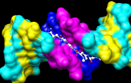

Many tasks in Chimera can be accomplished in multiple ways. For example, colors and display styles can be changed with the Actions menu or by entering commands. In general, commands are more concise and powerful, but menus allow easy access to features without knowledge of commands and their syntax.
In this tutorial, many of the same tasks performed with commands in the Getting Started Tutorial - Command Version are carried out using the menus instead.
Start Chimera by clicking or doubleclicking the Chimera icon
 (depending on its location).
Typically, this icon will be present on the desktop.
The Chimera executable can also be run from its
installation location (details...).
(depending on its location).
Typically, this icon will be present on the desktop.
The Chimera executable can also be run from its
installation location (details...).
A splash screen will appear, to be replaced in a few seconds by the main Chimera graphics window or Rapid Access interface. It doesn't matter which, since opening a structure will switch the display to the graphics window. If you like, resize the Chimera window by dragging its lower right corner.
Now open a structure. Choose File... Fetch by ID from the menu and fetch the entry with ID 1zik from the Protein Data Bank (PDB). Alternatively, if you're not connected to the internet, you can save the PDB-format file 1zik.pdb to a convenient location, then use File... Open in the Chimera menu to find and open it. The structure is a leucine zipper formed by two peptides.The default initial display is ribbons. To also display atoms:
Actions... Atoms/Bonds... show
This shows all of the atoms and bonds in the structure, except that those in the peptide backbone are suppressed by the ribbon display. How to indicate specific parts of a structure for display, coloring, etc. is discussed below. Initially, heteroatoms (atoms other than carbon) are color-coded by element: oxygens red, nitrogens blue, etc. The carbons retain the model color, in this case tan.
Try moving the structure with the mouse in the main graphics window. By default:
Hide ribbons to reveal the backbone atoms, then show ribbons again:
Actions... Ribbon... hide
Actions... Ribbon... show

Use the Favorites menu to show the Side View for interactive scaling and clipping. It shows a tiny version of the structure. Within the Side View, try moving the eye position (the small square) and the clipping planes (vertical lines) with the left mouse button. The Side View will renormalize itself after movements, so that the eye or clipping plane positions may appear to “bounce back,” but your adjustments have been applied. Continue moving and scaling the structure with the mouse in the graphics window and Side View as desired throughout the tutorial.
When the mouse focus is in the graphics window (you may need to click into it if you have been interacting with a different window), hovering the mouse cursor over an atom, bond, or ribbon segment without clicking any buttons will show identifying information in a pop-up “balloon.” The balloon will disappear when the cursor is moved away. For an atom, the balloon information is of the form:
res-name res-num.chain atom-nameYou can see from the balloons that this structure contains two peptide chains, A and B, and water (HOH residues), also with chain identifiers A and B.
In Chimera, selection specifies atoms, bonds, residues, etc. for subsequent operations with the Actions menu. Ways to make a selection include using the Select menu or picking from the screen. Several tools also provide specialized ways of making selections. The Actions menu applies to whatever is selected, but when nothing is selected, the Actions menu applies to everything. For example,
Select... Residue... LYSwill color all residues named LYS hot pink. The selection is highlighted in green, and the magnifying glass icon near the bottom right of the window is also green: , indicating that something is selected. Clearing the selection (deselecting) beforehand will color everything:
Actions... Color... hot pink
Select... Clear SelectionSelect menu choices also include chain ID, element, and many other categories of atoms and residues. (More complicated selections can be built up by intersecting some of these choices, as shown near the end of Part 2.)
Actions... Color... hot pink
Select... Chain... BOne way to select specific residues or ranges of residues is in the Sequence tool (menu Favorites... Sequence, show sequence for chain A). When the sequence window has mouse focus, placing the cursor over a residue symbol in the sequence shows information for the corresponding structure residue at the bottom of the window. Click-drag a box within the sequence window to select one or more residues (as opposed to simply clicking within the light yellow box, which will select the entire helix), then hide their atoms:
Actions... Color... cyan
Actions... Ribbon... hide
Select... Structure... solvent
Actions... Atoms/Bonds... hide
Select... Chemistry... element... N
Actions... Atoms/Bonds... sphere
Select... Clear Selection
Actions... Atoms/Bonds... stick
Actions... Atoms/Bonds... hideQuit from the sequence window and display all protein atoms again:
Select... Structure... proteinColoring can be limited to only certain representations, such as atoms only (not ribbons, surfaces, etc.):
Actions... Atoms/Bonds... show
Select... Residue... GLUIn the resulting Color Actions dialog:
Actions... Color... all options
Actions... Color... by heteroatomColoring by heteroatom is useful for showing functional groups, yet keeping different models distinguishable by their different carbon colors.
| residue labels |
|---|
 |
By default, picking from the screen is done by clicking on the atom or bond of interest with the left mouse button while pressing the Ctrl key. To add to an existing selection, also press Shift. Try picking two atoms in different residues (Ctrl-click the first, Shift-Ctrl-click the second).
Show residue labels for the atoms you have selected:
Actions... Label... residue... name + specifier(Actions... Label... name would show the atom names instead.) These 3D labels move along with structures and are mainly for interactive use. For figures and movies, 2D labels are recommended instead.
Promote the selection to the entire residues with the keyboard up arrow or the following:
Select... BroadenShow only the selected atoms:
Actions... Atoms/Bonds... show onlyClear the selection by Ctrl-clicking in empty space, as if picking “nothing.”
| coloring by element |
|---|
 |
Turn off residue labels, hide ribbon, display all atoms, and color by element:
Actions... Label... residue... offThe by element coloring is the same as by heteroatom except it also color-codes carbons (gray).
Actions... Ribbon... hide
Actions... Atoms/Bonds... show
Actions... Color... by element
Generally, each file of coordinates opened in Chimera becomes a model with an associated model ID number. Models are assigned successive numbers starting with 0. The Model Panel (open with Tools... General Controls... Model Panel) lists the current models and enables many operations upon them.
The columns on the left side of the Model Panel show:
Go on to Part 2 below, or exit from Chimera with File... Quit.
With Chimera started as described at the beginning of Part 1, choose File... Fetch by ID from the menu and fetch the entry with ID 1d86 from the Protein Data Bank (PDB). (Alternatively, if you're not connected to the internet, you can save the PDB-format file 1d86.pdb to a convenient location, then use File... Open in the Chimera menu to find and open it.)
The structure contains the molecule netropsin bound to double-helical DNA, initially shown with ribbons and stylized representations of the nucleic acid sugars and bases. Move and scale with the mouse in the graphics window and Side View as desired throughout the tutorial.
A preset is a predefined combination of display settings. Apply the “all atoms” preset, which will show the DNA as wire and netropsin as spheres:
Presets... Interactive 2 (all atoms)Color carbons white, then undisplay the water:
Select... Chemistry... element... CRemember that hiding atoms does not deselect them; they remain selected, as indicated by the green magnifying glass icon near the bottom right of the window, until the selection is cleared or replaced with a new selection.
Actions... Color... white Select... Structure... solvent
Actions... Atoms/Bonds... hide

Residue names can be identified by looking in the Select... Residue menu or by hovering the cursor over an atom or bond to see information in a pop-up “balloon.” Color the different nucleotides different colors, for example:
Select... Residue... DAAnalogously, color DC residues cyan, DG residues yellow, and DT residues magenta. Clear the selection with Select... Clear Selection or by picking (Ctrl-click) in empty space.
Actions... Color... blue
Next, try some different display styles, or representations.
Actions... Atoms/Bonds... sphere
Select... Chain... A
Actions... Atoms/Bonds... ball & stick
Select... Clear Selection
Actions... Atoms/Bonds... stick

Showing ribbon automatically hides the mainchain (backbone) atoms.
Actions... Ribbon... show
Actions... Ribbon... edged
Actions... Ribbon... rounded
DNA can be shown with special nucleotide objects. We will show “lollipops,” boxes, and a ladder.
Actions... Atoms/Bonds... nucleotide objects... settings...Nucleotide settings can be applied to just the selected residues (not necessarily all of the DNA). One way to select specific residues is in the Sequence tool:
In the resulting Nucleotides dialog:
- set Show side (sugar/base) as to tube/slab
- set Show base orientation to false
- click Slab Style tab, set slab style to skinny
- click Slab Options tab, set Slab object to ellipsoid
- click Apply; these are the “lollipops”
Favorites... SequenceShow the sequence of chain A and select one or a few residues in the sequence window with the mouse; this selects the corresponding part of the structure. Quit from the sequence window. In the Nucleotides dialog (also under Tools... Depiction in the menu):
Actions... Atoms/Bonds... nucleotide objects... offHide the ribbons and show everything as ball-and-stick:
Actions... Ribbon... hide
Actions... Atoms/Bonds... ball & stick
Finally, have some fun with surfaces. There are built-in categories within structures such as main and ligand; when nothing is selected, Actions... Surface... show displays the surface of main.
Actions... Surface... showSurface color can be specified separately from the colors of the underlying atoms. The ligand surface is tan and white because the original model color (tan) is used for surfaces of atoms not explicitly recolored by the user, and above, only the carbon atoms were changed to white. With the ligand still selected, choose Actions... Color... all options... to open the Color Actions dialog. In that dialog,
Actions... Surface... hide
Select... Structure... ligand
Actions... Surface... show
Actions... Surface... mesh
Select... Clear Selection
Actions... Surface... solid
Actions... Surface... hide
 As an example of a more complicated selection process, show the surface
of the adenine and thymine deoxynucleotides in chain B only:
As an example of a more complicated selection process, show the surface
of the adenine and thymine deoxynucleotides in chain B only:
To prepare for any subsequent operations, restore the selection mode and clear the selection:
- change the selection mode: Select... Selection Mode... append
- Select... Residue... DA
- Select... Residue... DT
- change the selection mode: Select... Selection Mode... intersect
- Select... Chain... B
- Actions... Surface... show
Select... Selection Mode... replaceThe command equivalent is much more concise, but requires some knowledge of the atom specification syntax:
Select... Clear Selection (or Ctrl-click in empty space)
Command: surf :da.b,dt.b
Sometimes it is helpful to make a surface transparent:
Actions... Surface... transparency... 50%Choose File... Quit from the menu to terminate the Chimera session.